スマートフォンがそのままレジになります。
商品をタップして、預かり金を入れて、確定するだけ。
売上と在庫は自動で計算され、全員の端末にすぐ反映されます。
紙とノートでやっていた「レジ・在庫管理・売上集計」を、ぜんぶスマホにまとめたものです。
| できること | どういうことか |
|---|---|
| スマホがレジになる | 商品をタップするだけで合計金額とおつりが自動で出ます。暗算も電卓も要りません。 |
| 何台でも同時に使える | レジを2台3台に増やしても、売上と在庫は自動で共有されます。数秒でおたがいの画面に反映されます。 |
| 在庫が自動で減る | 売れた分だけ残数が減ります。残りが少なくなるとオレンジ色の警告が出て、売り切れた商品はボタンが押せなくなります。 |
| 売上がその場で見える | 今いくら売れたか、何がよく売れているか、どの時間帯が忙しいかがグラフで分かります。 |
| 誰が操作したか残る | 会計・取消・在庫補充などの操作は、全部「誰が・いつ・何をしたか」が記録されます。お金のトラブルを防ぐためです。 |
スマホのブラウザを開くだけで使えます。管理者がAndroid用のアプリを用意していれば、それも使えます。
スマホのブラウザ（iPhoneならSafari、AndroidならChrome）で、管理者から教えてもらったアドレスを開きます。
https://＿＿＿＿＿＿＿＿＿＿＿＿.onrender.com
毎回アドレスを入力するのは大変なので、ホーム画面にアイコンを置いておくことを強くおすすめします。ふつうのアプリと同じように開けるようになり、アドレスバーも消えて画面が広く使えます。
| iPhone / iPad | Safariで開く → 下の 共有（□に↑のマーク）→ ホーム画面に追加 |
|---|---|
| Android | Chromeで開く → 右上の ⋮ → ホーム画面に追加 （管理者が用意していれば、下の専用アプリを入れる方法もあります） |
管理者がAndroid用のアプリを用意している場合は、「FES POS」というアプリを入れて使うこともできます。ホーム画面の FES POS アイコンをタップするだけで開けて、ブラウザのアドレスバーやタブに邪魔されません。レジ係をする人にはこちらがおすすめです。
| 入れ方 |
|
|---|---|
| 中身 | ブラウザ版とまったく同じです。操作方法もログインも、この説明書のとおりです。 |
| 更新 | 入れ直しは不要です。修正はアプリを開いたときに自動で反映されます。 |
4つのステップです。2回目からは合言葉とPINだけなので、10秒で終わります。
クラス共通の合言葉を入れて 入場する を押します。関係のない人が開けないようにするための入口です。
合言葉は担当者から直接聞いてください（この説明書には書きません）。
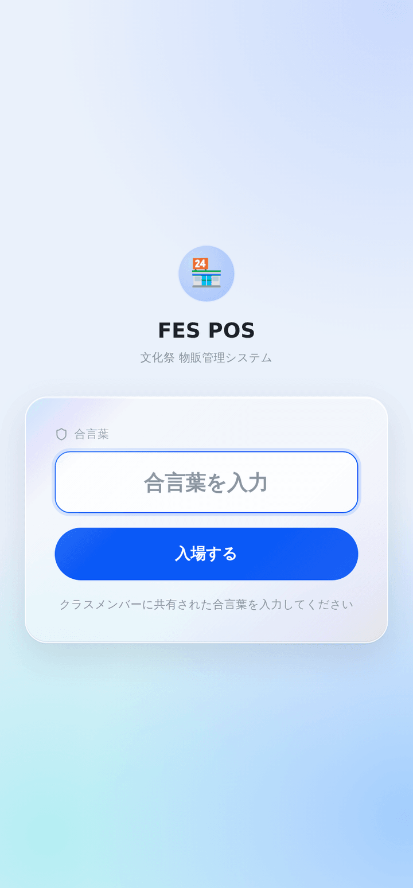
出席番号ではなく、4桁の個人番号です（例：2年3組1番なら 2301。分からなければ管理者に聞いてください）。自分の番号を入れて 次へ を押します。
番号を入れると、次の画面に自分の名前が出ます。名前が違っていたら番号の入力ミスなので、番号を変更 で戻ってください。
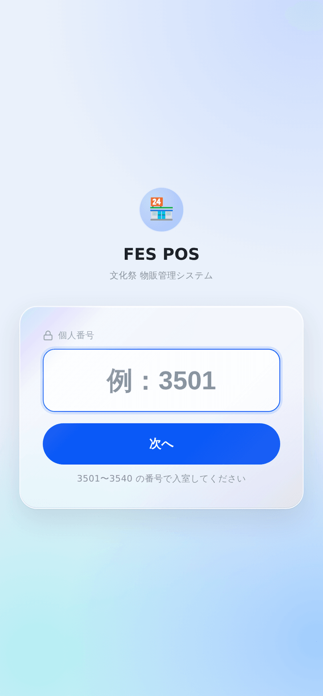
はじめてログインするときだけ、この画面が出ます。好きな4桁の数字を決めて、確認用にもう一度同じ数字を入れます。
これが次回からのあなた専用の暗証番号になります。忘れないものにしてください。
設定したPINは、管理者が承認すると使えるようになります（「管理者の承認待ちです」と出ます）。管理者に声をかけ、承認されたらもう一度同じPINで入室してください。
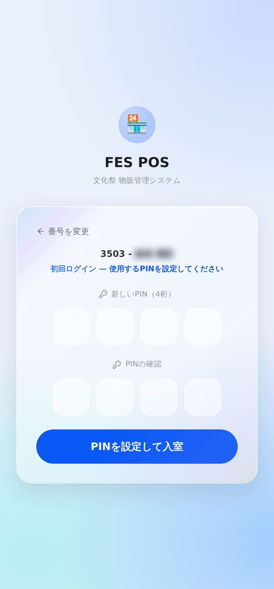
名前が合っていることを確認して、自分で決めた4桁のPINを入れ、入室する を押します。
これでレジ画面が開きます。
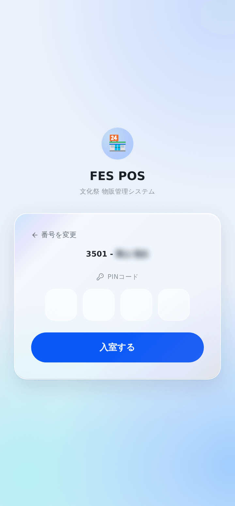
ここがいちばん大事です。当日レジに立つ人は、ここだけ覚えれば大丈夫。
上半分が商品ボタン、下半分がカートです。
それぞれの商品ボタンには、右上に 残○ と現在の在庫数が出ています。
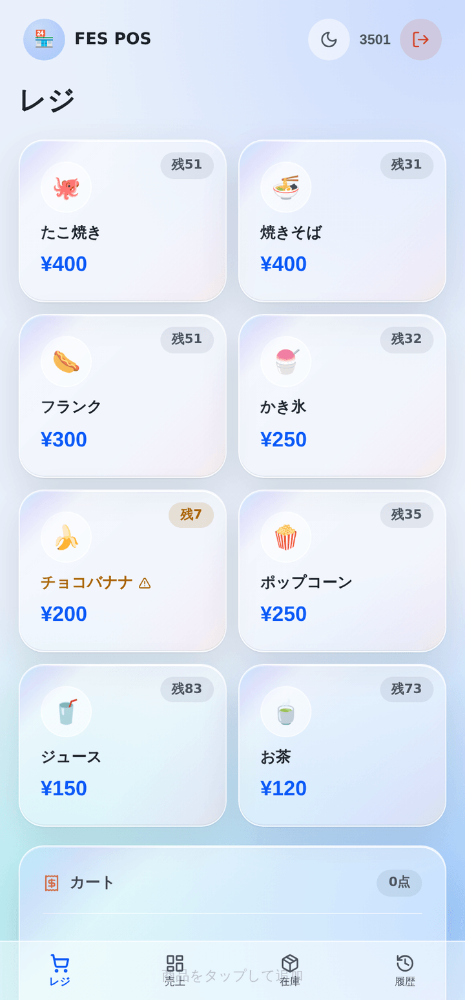
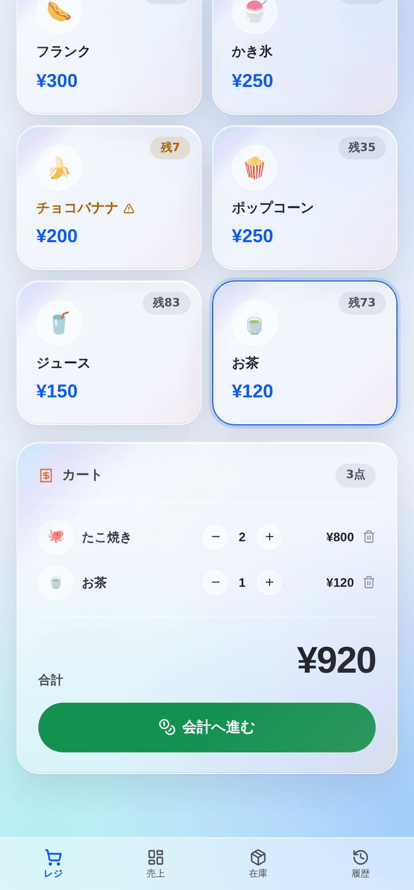
売れた商品のボタンをタップします。タップするたびに1個ずつカートに入ります。たこ焼き2個なら2回タップ。
画面を下にスクロールするとカートが見えます。ここで間違いに気づいたら:
合計金額が合っていることを確認して、緑色の 会計へ進む を押します。
「お会計」の画面が出ます。上に商品の一覧と合計金額が表示されます。
お客様から預かった金額を「預かり金額」に入力します。よく使う金額はボタンで入れられます。
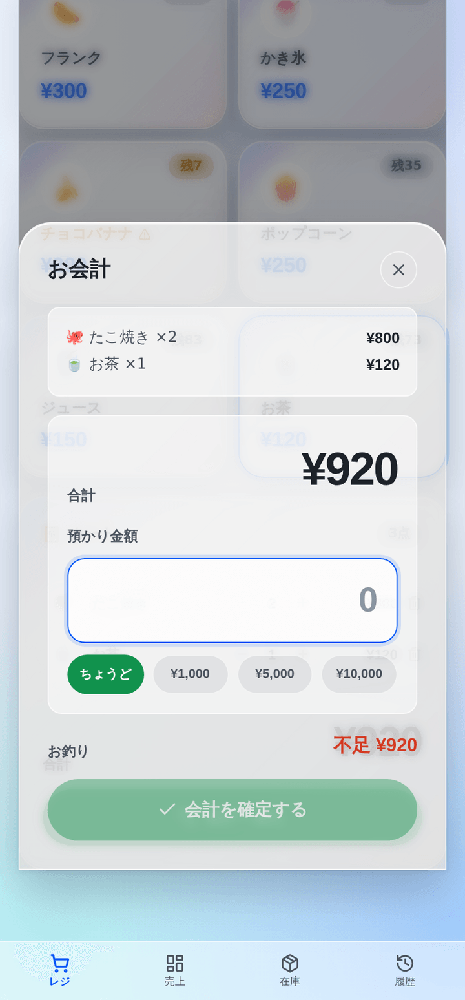
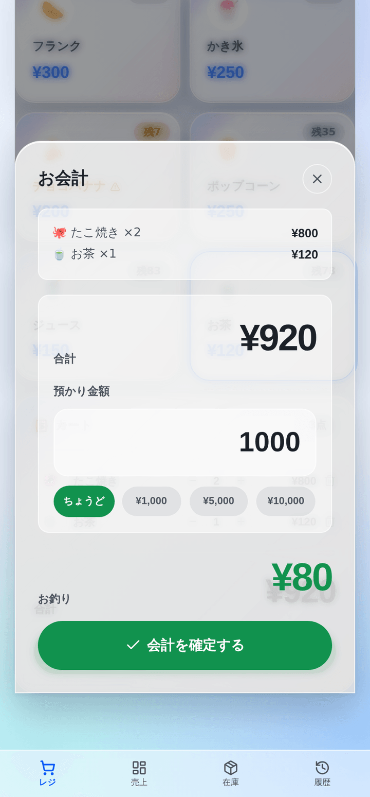
金額を入れると、下にお釣りが大きく緑色で出ます。この金額をお客様にお返しします。
預かった金額が足りないときは、赤い字で 不足 ¥○○ と出て、確定ボタンが押せません。もう一度金額を確認してください。
おつりを渡したら 会計を確定する を押します。「会計完了！ ○番」と出て、カートが空になります。
その番号（注文番号）をお客様に伝えます。商品は、受け渡しの係が番号を呼んで渡します（6章）。番号はカートの上の「前回 ○番」でも確かめられます。
この瞬間に、売上と在庫がすべての端末に反映されます。次のお客様をどうぞ。
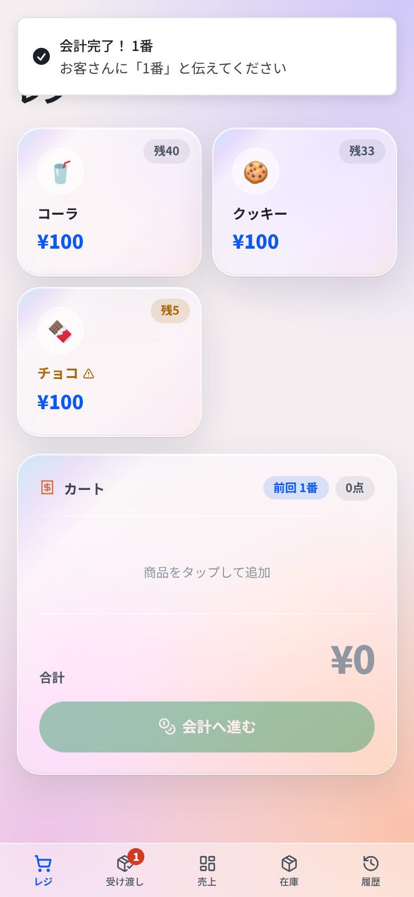
スマホは画面の一番下、パソコンは左側のメニューから切り替えます。
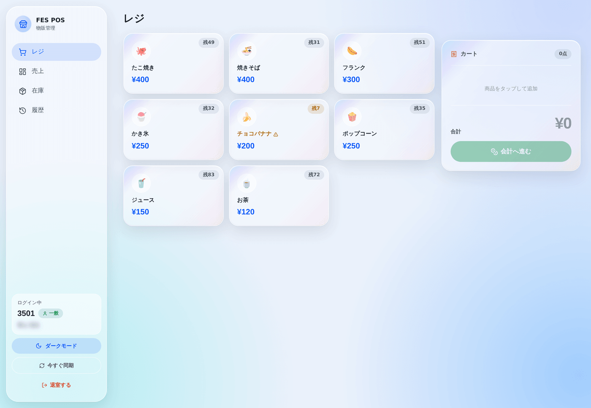
| タブ | 何ができるか |
|---|---|
| レジ | 会計をする。いつも使う画面 |
| 受け渡し | 会計した注文（番号と商品）を見て、お客様に商品を渡す |
| 売上 | 今日いくら売れたか、何が売れているかを見る |
| 在庫 | 商品ごとの残りの数を見る |
| 履歴 | これまでの会計の一覧を見る |
担当になったときに読めば十分です。
会計と商品を渡す場所が別のとき、受け渡しの係はこの画面を開いておきます。どのレジで会計しても、数秒で注文が出ます（番号と商品と個数。新しい注文は枠が光り、スマホが振動します）。
間違えて押したときは、下の「さっき渡した注文」から 戻す で戻せます（15分以内）。音なし を押すと、新しい注文のときに音が鳴るようになります。この画面を開いている間は、スマホの画面が消えにくくなります。
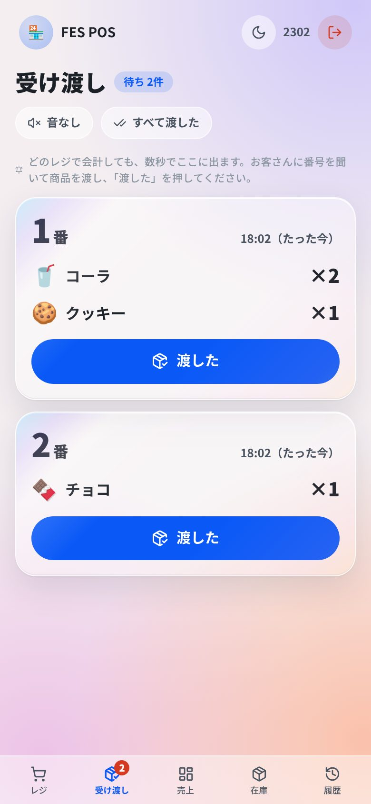
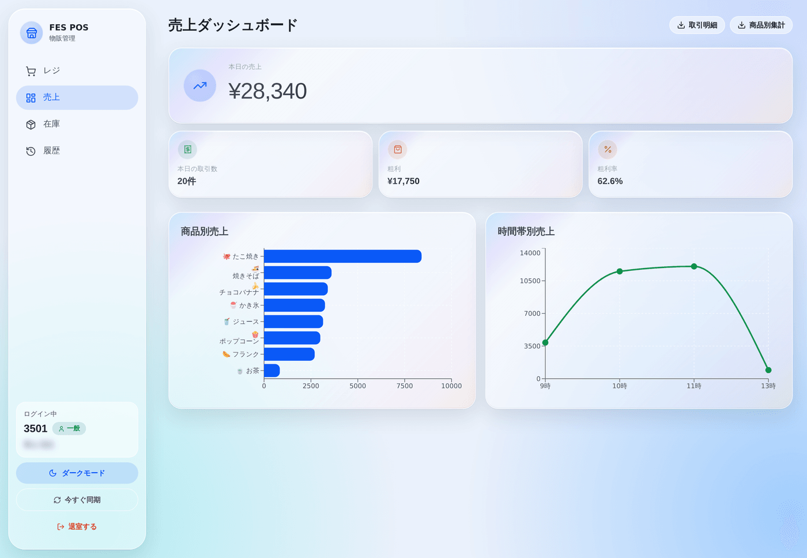
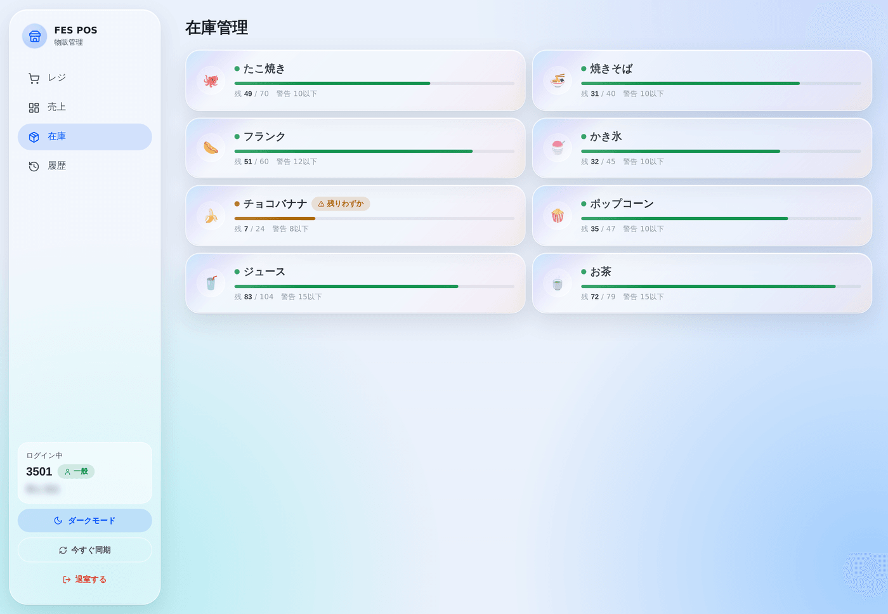
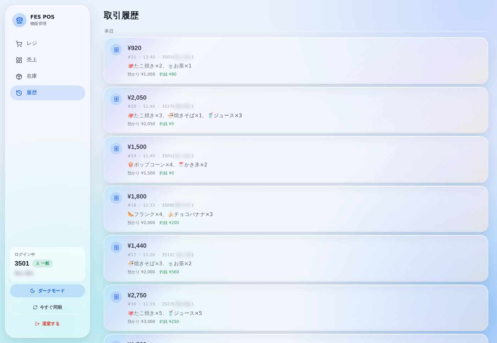
自分で直そうとせず、すぐ管理者に声をかけてください。取り消された会計は、下のように表示されます。
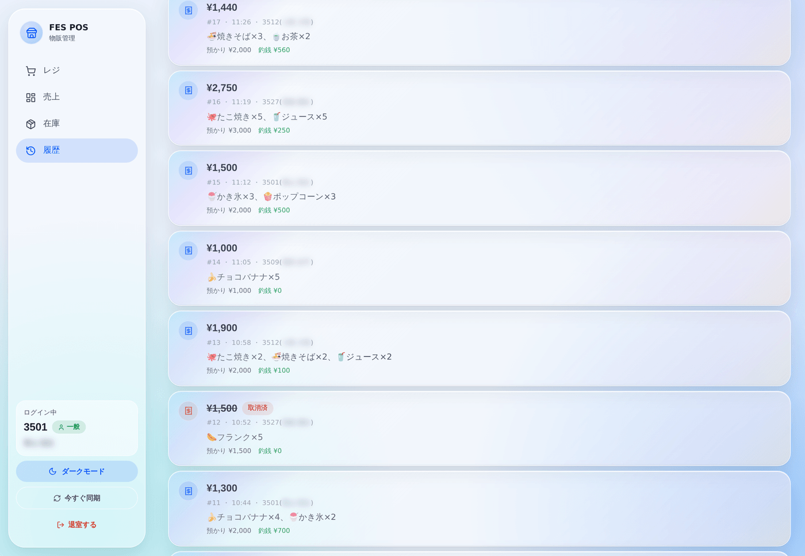
当日よくある場面をまとめました。システムが止まったときの詳しい対応は、別紙の「障害対応手順書」にあります。
お金を扱うので、この6つだけは守ってください。
興味がある人向けです。読まなくても使えます。
| 工夫 | なぜそうしているか |
|---|---|
| 金額はスマホ側で計算しない | 合計金額はサーバー側で商品の値段から計算し直しています。スマホから送られてきた金額をそのまま信じると、細工された金額で会計できてしまうからです。 |
| 在庫のチェックは「順番待ち」で行う | 2台のレジが同時に最後の1個を売ろうとしたとき、片方が終わるまでもう片方を待たせています。これがないと在庫がマイナスになります。 |
| PINは元に戻せない形で保存 | PINは暗号化して保存しているため、データベースを見ても数字は分かりません。管理者でも他人のPINは見られません。 |
| 権限をサーバー側でも確認 | 管理者用のボタンを隠すだけでなく、サーバー側でも「本当に管理者か」を毎回確かめています。画面をいじっても突破できません。 |
| 操作ログは消せない | 会計・取消などの記録は残り続けます。あとから「誰が何をしたか」を確認できるようにするためです。 |
画面は React、サーバーは Node.js（tRPC）、データの保存は TiDB というクラウド上のデータベースです。 サーバーは Render というサービスで24時間動いています。 デザインは HarmonyOS の動きの設計を参考にしていて、ボタンを押したときの反応やカードの動きはすべて実機の値をもとに調整しています。